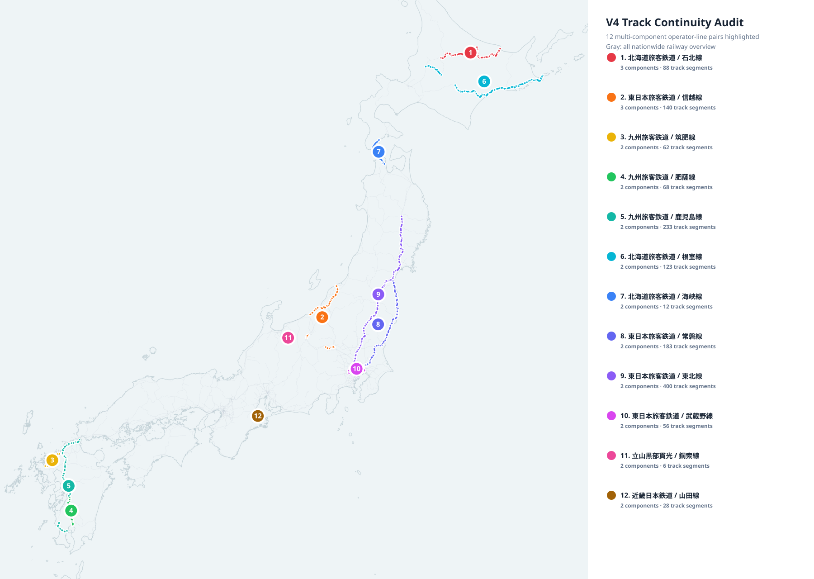

V4 Track Continuity Audit
All 12 multi-component operator-line pairs are highlighted on one map. Gray lines show the nationwide railway overview.

All 12 multi-component operator-line pairs are highlighted on one map. Gray lines show the nationwide railway overview.
